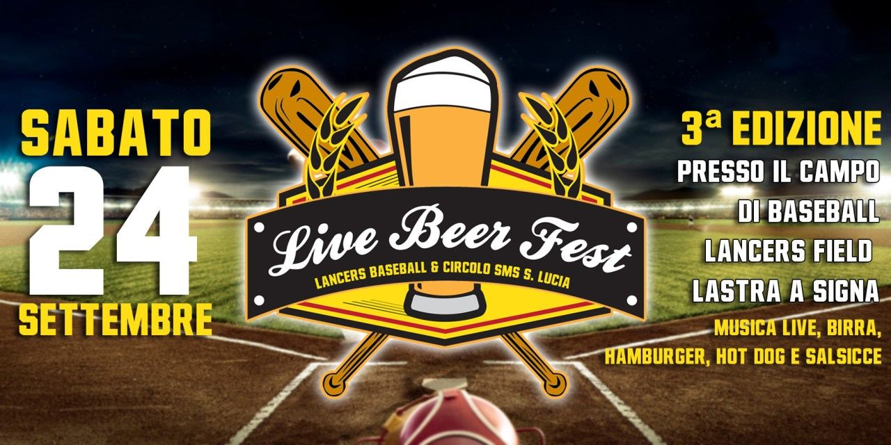
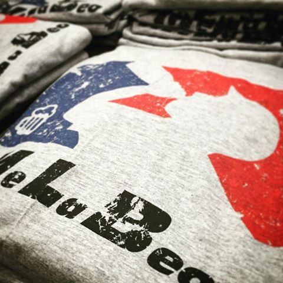

La stagione del baseball volge al termine almeno per quanto riguarda la parte giocata, si perché i Lancieri non si fermano e proprio in questo mese di Settembre vi propongano vari appuntamenti.
Di seguito trovate tutte le informazioni, date ed orari di quello che faremo in questo mese di fine estate:
-Sabato 03/09 3ª Giornata di Coppa Italia serie B vs Fiorentina, appuntamento alle ore 15.30 al campo da Baseball di Porto di Mezzo.
-Domenica 04/09 #SignaèFiera nel contesto della Fiera a Signa, grazie ad alcuni atleti della prima squadra, faremo provare questo bellissimo sport ai più piccoli
Dalle ore 15 ai giardini del Crocifisso potrete quindi cimentarvi con mazze, guantoni e palline!
-Domenica 11/09 “Il Porto in Gioco” torna questo gradito evento in collaborazione con Ospedale pediatrico Meyer, Comune di Lastra a Signa e Decathlon Lastra a Signa.
Giornata dedicata ai giochi antichi come tiro alla fune, corsa dei sacchi, bandierina, pentolaccia e molti altri sul nostro bellissimo campo; non mancherà l’occasione di provare il nostro sport e rifocillarsi con qualche panino e bevanda fresca.
-Domenica 18/09 “42° Memorial U. Valmarana” ancora una volta saremo ospiti di questo bellissimo torneo organizzato dagli amici del Sasso Marconi.
Il programma:
Ore 10 BSC Sasso Marconi vs Yankees S. G. Persiceto
Ore 12.30 Yankees S. G. Persiceto vs Lancers BC
Ore 16 Lancers BC vs BSC Sasso Marconi
E’ obbligatorio per i Lancieri riportare a casa il primo posto per il terzo anno consecutivo.

-Sabato 24/09 #livebeerfest2016 Per la terza edizione del Live Beer Fest il Circolo Sms Santa Lucia ha stretto una collaborazione con la nostra società, pertanto si cambia location ma non cambia lo spirito di questa bellissima festa che propone ottima musica live, birra di qualità e panino fenomenali con hamburger, hot dog o salsicce.
Nel primo pomeriggio si svolgeranno due bellissimi incontri, si inizia con un All Star anni 90 guidata dal coach Zalonici che affronta l’attuale Serie B e seguirà un interessante incontro Genitori contro Figli del nostro settore giovanile.
Forza LANCERS!